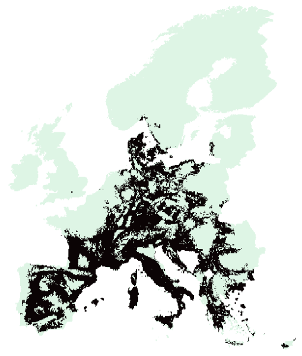
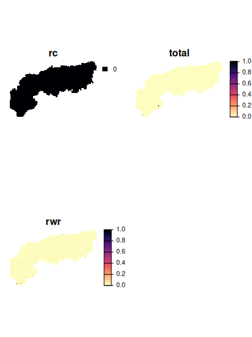
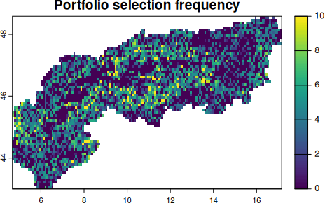

library(rcbc) # Load the library for the solver just to be sure!
# solve and create the solution
s <- solve(p) 4 Solving and interpreting solutions
In this section we will create a solution to the previously set up planning problem (object p, see Chapter 3). Specifically we will solve the problem, analyse its outputs and calculate a range of metrics and indicators describing it.
4.1 Find a solution for a conservation problem
In the previous section we defined a conservation problem based on a planning unit file, features, the specification of an objective function and decision variable. We also added a solver which we can now use to find a solution to the problem specified.
Running this code will create a lot of output in the terminal and different solvers make different outputs and take different length of times to create solutions (they are effectively external software of varying sophistication). You can pipe in a different solver (such as add_highs_solver()) to test this out. See also Hanson et al. (2019)
4.2 Plot the solution
The output of the solved problem from above is essentially a spatial raster that can be plotted.
# plot the solution map
plot(s, col = viridisLite::mako(n = 10, direction = -1), axes = F)
With the specified objective function, can you summarize the amount of area contained in the solution? How much would you expect?
4.3 Calculate performance evaluation metrics
Now that we have created a solution and visualized it, the next obvious question would be: How good is it? What are we conserving and what maybe not? These are critical questions for any SCP application and different problem formulations will achieve different levels of representation. Performance metrics are usually used to answer such questions in any SCP workflow, and they can assess a solution based on its spatial distribution and/or the features conserved within.
During the problem setup we defined a set of targets for each feature, so naturally a question could be for how many species we reach the target and also how far are we off (see also Jantke et al. (2019)). We used a minimum shortfall objective, thus our objective is to minimize the shortfall (e.g. distance) between the amount covered by the feature as constrained by the budget. Thus we can most feasibly assess the performance of this solution for the species by assessing their representation and their target shortfall.
# In Prioritizr there are convenience functions that can summarize the
# coverage of species in terms of amount held
1rpz_target_spp <- eval_target_coverage_summary(p, s)
# mean representation across all species
2mean(rpz_target_spp$relative_held)
## mean target shortfall across all species
3mean(rpz_target_spp$relative_shortfall)- 1
- This calculates the coverage of the features (taken from the problem) over the solution, also providing the initial amount.
- 2
- Here we calculate mean representation, e.g. how much habitat is held by the solution across all features.
- 3
- This calculate the average shortfall, so the difference between held amount and target across features.
5 Irreplaceability
The solution quantified above is effectively asked what share (proportion) of land is needed to minimize the most targets for all included features in a complementary way. However we are only looking at the full solution, while in reality some PU might be more or less important in achieving the best or optimal outcome.
One simple way is of course to calculate to step-wise increase the budget available for the planning and then iteratively rank the set of PU in terms of when they enter a solution (see here for more, see Section 7.3 for more). This is usually the most straight-forward approach for objective functions that support the specification of a budget.
Another is to calculate metrics that relate the amount available with the amount in the solution across features, which are often called irreplaceability metrics (See also Kukkala & Moilanen (2013)). For this situation prioritizr supports 3 different ways of quantifying irreplaceability, each with their own caveats.
The replacement cost scores are the most precise as they actually relate to whole problem formulation, thus make use of the specified targets and constraints to quantify how “replaceable” a given PU in a solution is. The downside is really the computational effort and this really only recommended for small and moderate sized problems, and may not be feasible for large problems (e.g., more than 100,000 planning units or features).
Irreplaceability scores can also be calculated using the method set by Ferrier et al, which can be relatively quicker. Note that this function only works for problems that use targets and a single zone. It will throw an error for problems that do not meet these criteria.
Lastly there is the method by Albuquerque & Beier (2015) for calculating rarity weighted richness estimates. Those tend to compare reasonably well to standard prioritizations (e.g. maximum coverage) that scale with differences in range size, yet it does not make use of set targets or any other complexity factors in the problem formulation.
For simplicity and also to not wait an unreasonable amount of time, we here use a smaller geographic subset to illustrate the concept. Specifically we download an outline of the alpine region only and rerun our prioritization just for this region. You can obtain a shapefile of their outline here.
# Load the alps and clip all PU and features to this geographic extent
alps <- sf::st_read('data/AlpineConvention.shp') |>
sf::st_transform(crs = sf::st_crs(4326))
PU_alps <- PU |> terra::crop(alps) |> terra::mask(alps)
spp_alps <- spp |> terra::crop(alps) |> terra::mask(alps)
# Recreate and solve the problem
budget.area <- round(0.3 * terra::global(PU_alps,"sum",na.rm=T)[,1] )
p_alps <- problem(PU_alps, spp_alps) %>%
add_min_shortfall_objective(budget = budget.area) %>%
add_relative_targets(targets = .3) %>%
add_cbc_solver() %>%
add_proportion_decisions()
s_alps <- solve(p_alps)
# to calculate importance scores using replacement cost:
ir1 <- eval_replacement_importance(p_alps, s_alps)
# calculate importance scores using Ferrier et al 2000 method,
# and extract the total importance scores
ir2 <- eval_ferrier_importance(p_alps, s_alps)[["total"]]
# calculate importance scores using rarity weighted richness scores
ir3 <- eval_rare_richness_importance(p_alps, s_alps)
# So we can see that actually only very few PU are highly irreplaceable
# (regardless of method) for this smaller geographic subset
# For ir1 (replacement cost) we actually find that no PU is fully irreplaceable
plot(c(ir1, ir2, ir3), axes = F, col = viridisLite::magma(n = 100, direction =-1))
5.1 Portfolios
One of the key principles of exact algorithms is to identify solutions that are close as possible to the optimum (e.g. the best possible) as well as being able to quantify the gap between the found solution and an optimum. This differentiates them for example from other prioritization software where often ‘selection frequencies’ returned (Marxan).
However, in practice it can also be useful to obtain not only the best or optimal solution, but also the next best or a small portfolio of options (like the top 10).
Portfolio methods
There are different portfolio methods (random, shuffle, cut, gap, etc…) available that provide different outputs, note that many portfolio methods are only available for Gurobi. See the help file for alternatives when in doubt.
# For this portfolio example we again add create a solution,
# but specificy a cut portfolio with the top 10 solutions.
sp <- solve(p_alps |> add_cuts_portfolio(number_solutions = 10) )
# Reduce them into one
sp <- Reduce(c,sp)
names(sp) <- paste0("top",1:10)
# These portfolios could again be used to investigate a selection frequency
# in these near-optimal solutions
sp |> sum() |>
plot(main = "Portfolio selection frequency")